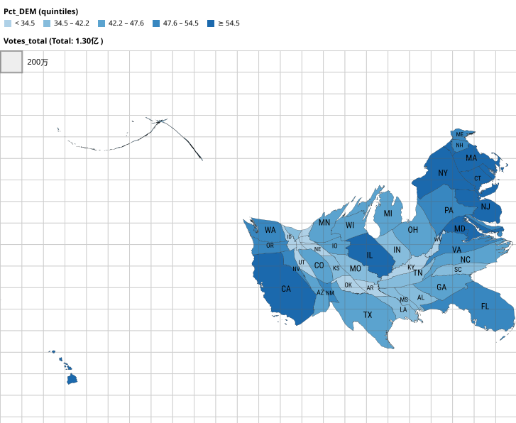

Lab 02 · September 2026
Spatial Distribution of the 2016 U.S. Presidential Election Votes
The question
Where was the support for the DEM concentrated?
The data
The data is the county-level result of the 2016 United States presidential election, published by Esri as a teaching layer.
However, there are 3 problems in the data:
First, there's an empty DEM_votes field in the table. But also a fully filled votes_DEM field, which may cause some confusion.
Second, the 28 rows corresponding to the 28 counties in Alaska hold the same data, which is the overall vote result of the state of Alaska. This is because Alaska does not report presidential results by borough; it reports by state house district. And whoever compiled this layer just filled every county with the State's data.
Third, the certified 2016 national vote result was 65,853,514 and 62,984,828. The actual sums we generate from the teaching layer are about 62.5 and 61.2 million, even after we remove the duplicate data from Alaska.
The method
Various methods were used to generate the following 4 maps.
The colors on map 1 were generated from the percentage of voters voting for the DEM in each county. The data was classified into 5 groups using "Natural Breaks," which was designed to reduce the variance within classes and maximize the variance between classes. By using "Natural Breaks," it's easier to see how data points cluster and the shape of their distribution.
Map 2 was simply generated by using circles with different sizes to represent the number of voters in each county.
Map 3 comes from standardizing each county's percentage of voters supporting the DEM. We get the standardized score z by z = (Original_value - mean) / standard deviation. The z score tells us compared to the 0.3147 national average support rate of the DEM, whether a county is more supportive of the DEM or less supportive.
Map 4 is a cartogram. Each state on the map is resized so that its area is proportional to each state's total voters. And the color is generated based on each state's support rate of the DEM.

What I found
Map 1, 3 and 4 support the same thing, that is the supporters of the Democratic Party mainly concentrate in the east and west coastline area and the southwestern inland region. And map 2 & 4 point to one conclusion that most of the voters in the 2016 election come from the coastline area rather than the middle and western inlands.
What this does not show
None of these 4 maps is perfect.
Map 1 and 3 are both showing the distribution of a rate, though they process the raw data differently. And since it's a rate, the denominator, which is the total voters in each county, matters. But both map 1 and 4 hide the denominator.
Map 3 also hides the "national average," i.e. the meaning of being "neutral."
Map 2 shows the number of voters and its distribution directly but hides the voters' political leanings.
Map 4 shows the denominator of support rate and voters' political leanings at the same time but distorts the shape of states.
Another important thing to notice is that these 4 maps are all built from the popular vote data. However, the votes that determine who becomes president are the electoral vote. Consequently, it is possible for a candidate to receive more votes nationwide but not become president, which is the 2016 case. So we actually can not tell who won the election from these maps. But a reader who's not familiar with the presidential election process may try to make guesses on who won the election seeing these maps.
AI use: None.